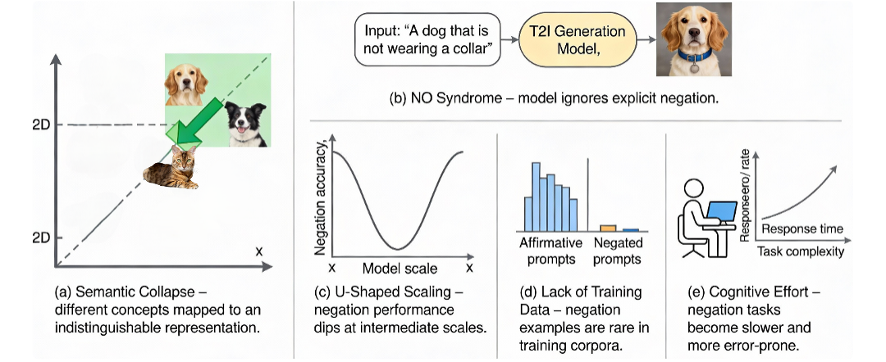
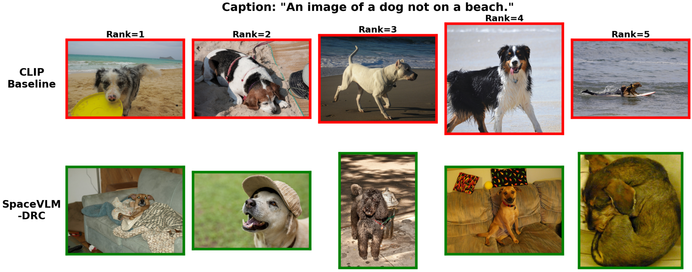

ashishpokhrel27 [at] gmail [dot] com · Laramie, WY
Computer Science Graduate Student at the University of Wyoming (GPA 4.0) with 3+ years consulting Fortune 500 retail clients on large-scale Data Engineering and Analytics solutions — turning complex enterprise datasets into actionable business intelligence. My research focuses on improving logical reasoning in Vision-Language Models, particularly how multimodal systems handle negation and compositional concepts. This dual background lets me bridge cutting-edge academic research with the scalable infrastructure needed for real-world deployment.

Negation in Vision-Language Models: A Survey

Negation Matters: Training-Free Negation-Aware Image Retrieval
Logic Information Systems · Fortune 500 Retail Clients
Master of Science in Computer Science
University of Wyoming · GPA: 4.0
Bachelor of Engineering in Computer Engineering
Tribhuvan University · 76.83% (GPA: ~3.8)
Languages & AI Frameworks
Databases
Data Engineering
Cloud
Reporting & BI
Tools & Methods